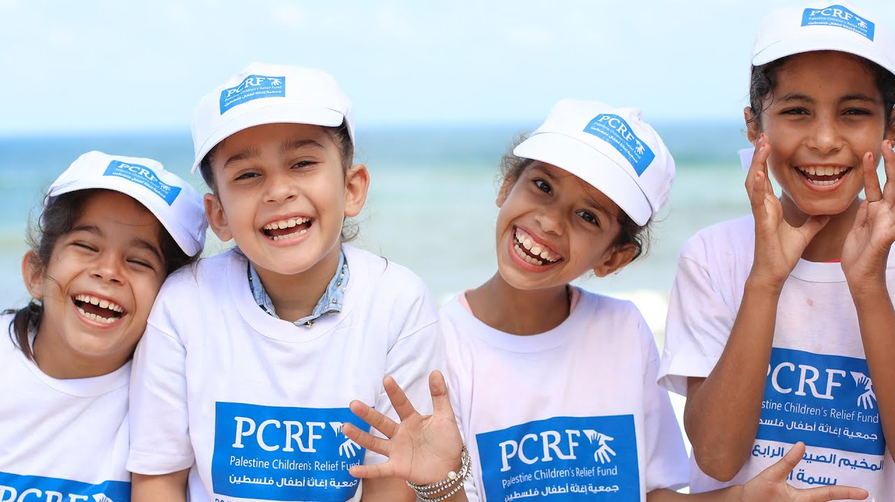
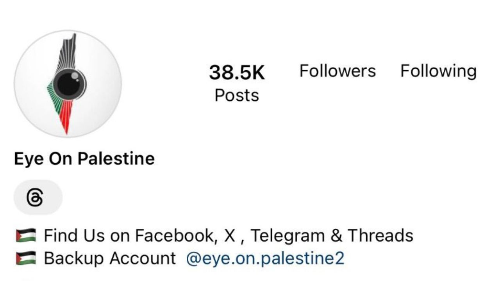
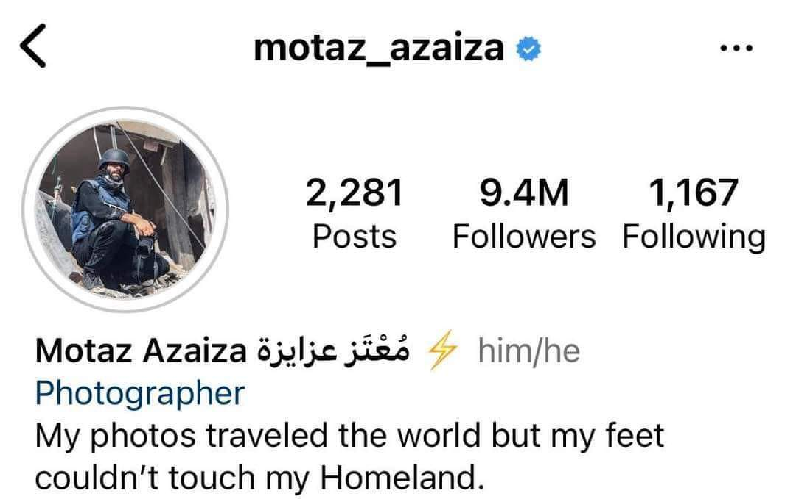

Call To Action
At Heart for Palestine, we believe in the power of collective action to make a positive impact. This page is dedicated to everyone who shares our passion for justice, human rights, and a better world. Your involvement, no matter how big or small, plays a vital role in supporting the Palestinian cause and contributing to meaningful change.
Join Us in Making a Difference!
- Why get involved?
Every action, every voice, and every contribution matters. By getting involved with Heart for Palestine, you become an integral part of a global community committed to standing in solidarity with the Palestinian people. Whether you're interested in volunteering your time, participating in events, or supporting our fundraising initiatives, your involvement has the power to create positive change.
Ways to Engage
- Volunteer Opportunities
The PCRF is the main nonprofit in the world sponsoring and running international volunteer medical teams to work in public hospitals in Palestine and in Lebanon's refugee camps to provide free specialized care for sick and injured children who otherwise would not get the care that they need. Thousands of doctors and nurses from the USA, Italy, Chile, France, Germany, Spain, Japan, Australia, Egypt, Canada, Switzerland, and many other countries give their time and expertise to train local doctors and treat thousands of children each year.

The Jordan Hashemite Charity Organization (JHCO) is a multifaceted national non-governmental, non-profit organization that seeks to prompt and take part in voluntary charitable activities both in Jordan and abroad. Through its cooperation, JHCO aims to reflect the objectives of benefactors and assist in projects and programs that combine integrity, further justice and solidarity at national, Arab, Islamic and international levels, and emphasize the ideals of kinship and development. The organization is also engaged in voluntary work and public service, working to create opportunities for a decent life through development and rehabilitation projects and programs that it implements or manages, both economically and from a humanitarian perspective, in addition to special focus on emergency and immediate humanitarian aid in cases of disasters and public catastrophes in view of Jordan’s extensive international relations.
- Fundraisers
🌟 Heart for Palestine: Support Justice, Empower Lives 🌟
At Heart for Palestine, we are passionate about making a meaningful impact in the lives of Palestinians and promoting justice, human rights, and ethical living. Our mission goes beyond advocacy – it's about building a future where every individual has the opportunity to thrive.
Why Donate to Heart for Palestine?
- 🤝 Stand in Solidarity: Your donation is a powerful symbol of solidarity with the Palestinian people. It sends a clear message that you stand with those seeking justice, peace, and a better future.
- 🌍 Impactful Initiatives: We believe in taking meaningful actions. Your contribution supports impactful initiatives that address the challenges faced by Palestinians, ranging from humanitarian aid to educational programs.
- 🌱 Empower Through Education: Education is a key to empowerment. With your support, we aim to provide educational resources, scholarships, and opportunities to Palestinian youth, empowering them to shape a brighter tomorrow.
- 🛒 Ethical Consumption: Heart for Palestine is dedicated to raising awareness about ethical consumption. Your donation contributes to our efforts to promote ethical alternatives, encouraging conscious choices that align with justice and human rights.
How Your Donation Helps:
- -Humanitarian Aid
- -Educational Programs
- -Empowerment Initiatives
- -Advocacy for Justice
Your generosity fuels our commitment to positive change. Every donation, no matter the size, plays a crucial role in creating a world where justice prevails, and every individual has the chance to flourish.
Donate today and be a part of the Heart for Palestine movement! Together, we can make a lasting impact. 💙
- Follow Trusted Sources on Social Media

Motaz Hilal Azaiza was born and raised in Deir al-Balah Refugee Camp in Gaza.
Motaz was never intent on fame growing up. He graduated from Al-Azhar University of Gaza in 2021 with a degree in English Language and Literature; the same university that has now been reduced to rubble by Israel's current aggression.
The Palestinian photographer was one of thousands of graduates in Gaza who struggled to find inspiration after graduating, due to the high unemployment rate in Gaza.
Yet, for as long as he can remember, he loved photography so he started a page on Instagram, mainly taking pictures of everyday life in Gaza.
Gradually, his page started to gain traction, but, in Gaza, the threat of war is constant.
Motaz was compelled to cover Israel's 2014 and 2021 aggressions. However, despite his efforts to show the plight of Gaza to the world, his photos were relatively unnoticed.
On October 7, Motaz's Instagram page only had 25,000 followers.
Now, Motaz Azaiza has over 13 million. But, as Motaz explains to The New Arab, these numbers mean nothing: only his family and the people of Gaza do.
The world comes to see the truth through Motaz's coverage of Gaza.
He's not only a photographer but a shining light of Palestinian resilience to the world.
More than ever, he is determined to continue exposing Israel's impending genocide.
